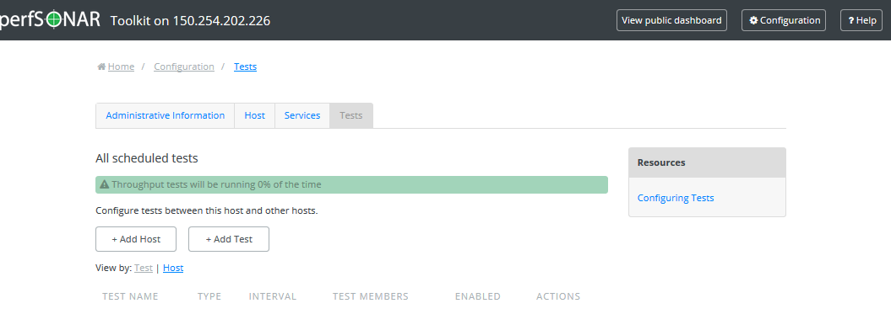
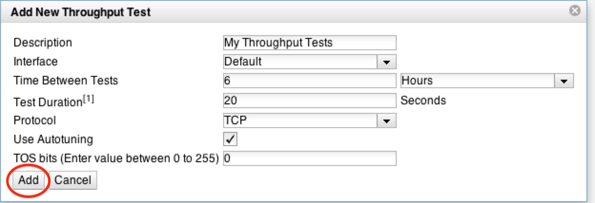
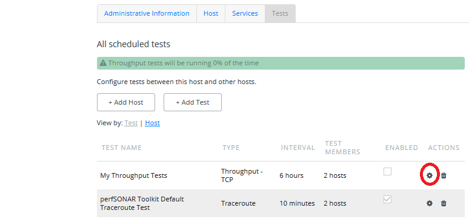
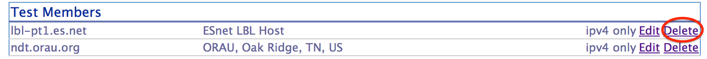
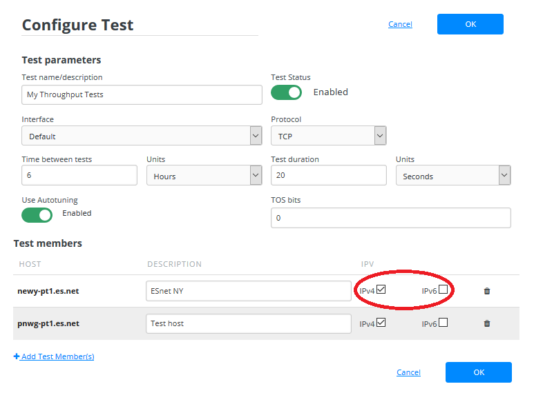
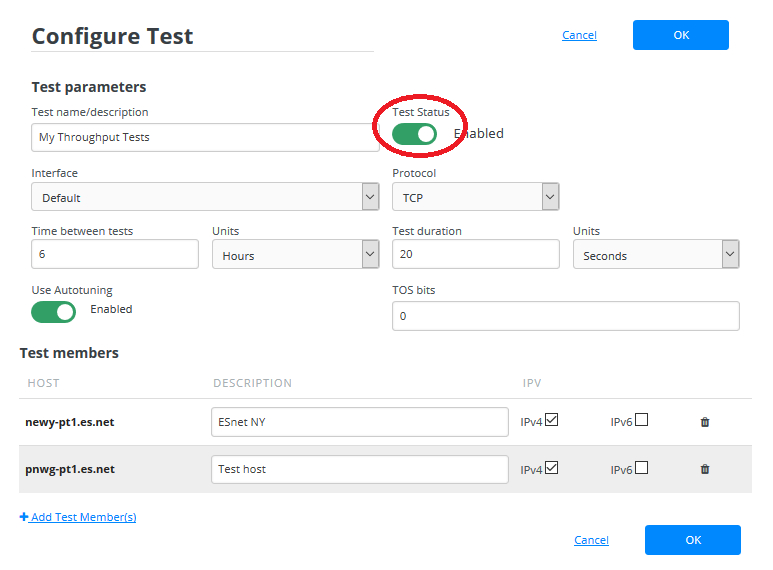
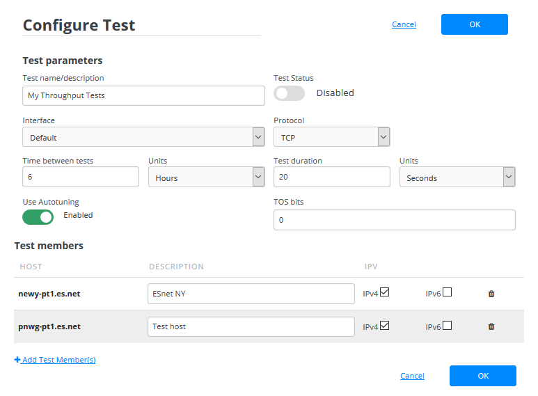
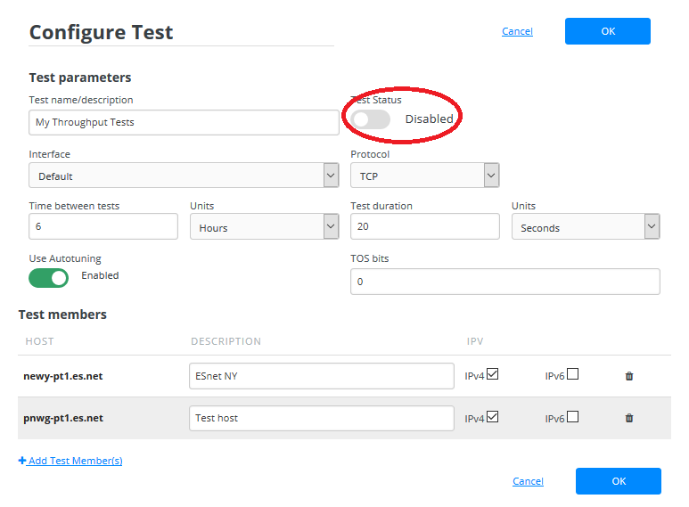
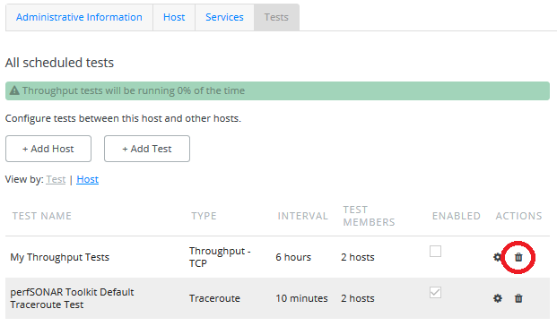
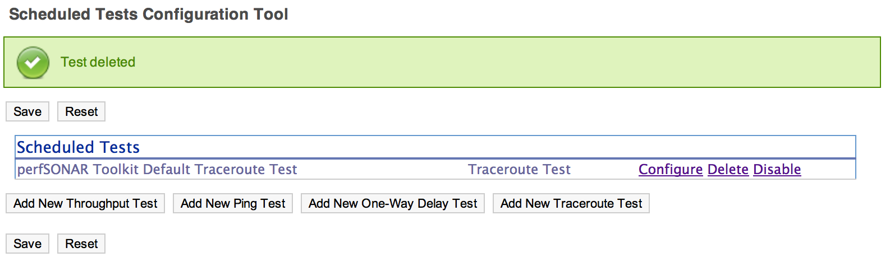

A core function of the perfSONAR Toolkit is to run regularly scheduled network measurements. You can define the tests you want run through the toolkit’s web interface. This section describes using the interface to manage the set of tests run by tour toolkit node.
See also
See Mesh Configuration Quick Start for information on an alternative way to configure tests when your host is participating in a large community or you manage multiple hosts.
Open http://<hostname> in your browser where <hostname> is the name of your toolkit host
Click on Configure Tests in the left-hand menu
See also
See Managing Users for more details on creating a web administrator account
The page that loads can be used to manage regular tests. See the remainder of this document for details on adding, modifying, disabling and deleting tests.

Multiple types of tests can be configured through the web interface. They are described below:
On the main page of the configuration interface you will see buttons for each test type. Click on the button for the test type you would like to add.
A pop-up will appear prompting you for the parameters of the test. Each prompt contains a Description field you are required to define. The Description is a human-readable string and will only be used on this interface to identify the test. The remaining parameters are detailed in the tables below:
Throughput
Field Default Description Interface Default The network interface on which to run the test. The default is the default interface of the host. Use this field if you have multiple interfaces and want to specify the interface where this test runs. Time Between Tests 6 hours The amount of time in between tests. Throughput tests consume bandwidth so usually only run a few times a day. The default is every 6 hours. Note that the tests will not run exactly every 6 hours as some randomization occurs to prevent tests from running in sequence at the beginning of the interval. Test Duration 20 seconds The length of the tests to be run. TCP requires time to ramp up, especially as the latency increases. Consider using a larger value if the test subjects are further away. Protocol TCP The transport protocol to be used. It can be TCP or UDP. UDP Bandwidth Not set Field only appears if Protocol is set to UDP. For UDP this sets the target bandwidth in Mbps. Note that you should be careful with high values since UDP is not a “fair” protocol (in contrast to TCP) and will not back-off on bandwidth if it encounters other traffic. Also note that many BWCTL instances disable UDP by default, setting this option may require coordination with remote testers to allow the test to complete. Use Autotuning Yes Allows the TCP window size to be automatically calculated. Window Size Not Set If Use Autotuning is not checked then this field appears. Manually sets the value of the TCP window size. TOS bits 0 A value between 0 and 255 that will be set in the TOS field of the IP header, and will only have impact on networks that support QoS specifications. If you are unsure about this field, leave the default. Ping
Field Default Description Interface Default The network interface on which to run the test. The default is the default interface of the host. Use this field if you have multiple interfaces and want to specify the interface where this test runs. Time Between Tests 5 minutes The amount of time in between tests. Ping tests are low bandwidth and generally run every few minutes. Packets Sent Per Test 10 The number of packets to send per test. Multiplying by the Time between packets yields the duration of the test in seconds. Time Between Packets 1 second The time to wait in between sending packets. Multiplying by the Packets sent per test yields the duration of the test in seconds. Size of Test Packets 1000 bytes The size of the packets sent One-way delay
Field Default Description Interface Default The network interface on which to run the test. The default is the default interface of the host. Use this field if you have multiple interfaces and want to specify the interface where this test runs. Packet Rate 10 packets per second The number of packets sent each second. Note that each OWAMP daemon has limitations on the bandwidth for tests. If the packet rate and packet size exceed available bandwidth, tests may be denied. Packet Size 20 bytes The size of the packets sent. Note that each OWAMP daemon has limitations on the bandwidth for tests. If the packet rate and packet size exceed available bandwidth, tests may be denied. Traceroute
Field Default Description Interface Default The network interface on which to run the test. The default is the default interface of the host. Use this field if you have multiple interfaces and want to specify the interface where this test runs. Time Between Tests 10 minutes The amount of time in between tests. Traceroute tests are low bandwidth and may run every few minutes. Packets Size 40 bytes The size of the packets sent First Hop to Report 1 The first hop to report starting at 1. The default is to report all hops. If you would like to hide the first few hops, set this to a value greater than 1. Maximum Number of Hops 30 The maximum number of hops to traverse before the traceroute is abandoned.
Click the Add button when you are done adjusting the settings

Option 1: Manually add a new host
You may enter an IP or hostname manually. You can do this by first clicking the Add New Host button
In the prompt enter the address of the host you wish to add in the Host field. Depending on the test type you may also add the port in the Port field. In most cases you will want to use the default port. You can also add a human-readable description to the Description field that will only be used by this interface when displaying the host.
When you are done click Add. Repeat these steps if you would like to manually add more hosts to the test set.
Option 2: Search for hosts by community
Many hosts tag themselves as belonging to a particular community. Communities are just free-form tags used for organization purposes. You can browse hosts by community using the toolkit regular testing interface. The regular testing interface contains a word cloud of communities where communities with larger text have more members. Click on a community to view its members.
This will load a list of hosts in a given community. If you wish to add a host to your test, click on Add to test
Repeat these steps to find and add more hosts by community.
See also
See Changing Test Member IP Address Settings for more details on what these fields mean and how to modify them
Take note that a traceroute test is automatically added when you add a non-traceroute test. If you are content with this setup then there is nothing to do. If you would like to remove these tests click Delete. See Deleting Test Members and Deleting Regular Tests for more details on removing these tests if you so desire.
If you would like to add more tests, you may return to step 1. Otherwise click the Save button to apply your changes.


It may take several hours for throughput data to appear and several minutes (depending on the time between tests) for the other test types. If the tests are working you should be able to data in the graphs.
See also
See Regular Testing Graphs for details on reading graphs
You may modify settings of a test set after adding it . Access the regular testing interface and click Configure next to any test you wish to change:
From the page that loads you can make a number of changes. See the sections that follow for details on how to make some specific changes.
Click on Edit Test Parameters
Use the prompt to change the desired settings. See the tables here for complete listing of parameters and their meanings. Click Set to leave the prompt and keep your changes.
If you are done making changes click Save to apply your changes
Find the test member you wish to remove and click Delete

You should no longer see the host in the list
If you are done making changes click Save to apply your changes
From the configuration interface, the process for adding more test members is the same as that detailed in the section Adding Regular Tests. Specifically see the discussion on manually adding a host and adding a host by community for more details.
When you add a new test member, the configuration automatically determines if you should the test should run using IPv4, IPv6 or both. See the discussion on IP type when adding a new test for more details on the default behavior. If you would like to override the default behavior or update the host address do the following:
Find the test member you would like to update and click the Edit button

In the prompt change the fields you wish to update. Click Set to leave the prompt and maintain your changes
Warning
Checking the IPv4 and IPv6 or text boxes will create a test that forces that address family. If the local interface or remote host does not support that address type your test will be unable to run. For example, if the remote host is an IPv4 address but only the IPv6 checkbox is selected then it will be impossible to run a test. There is also a warning in the web interface in these cases.

If you are done making changes click Save to apply your changes
In some cases it may be desirable to stop running tests for a period of time, but not to delete them entirely. This allows them to be enabled again at a later time without recreating the entire test set. To disable an existing test set do the following:
On the regular testing interface, click Disable next to the test set you would like to disable.

This should strike-out the text of the disabled test as shown below

When you are done making changes click the Save button.
If you have previously disabled a test and wish to enable it again do the following:
On the regular testing interface, click Enable next to the test set you would like to enable. Only currently disabled tests (those with with stuck out text) will have this option next to them.

The text should no longer be struck out
When you are done making changes click the Save button.
The interface allows you to completely delete a test set. This will stop all tests in the set from running and completely remove them from the configuration interface. If after deleting a test set, you would like to re-add the tests, you will have to completely recreate the test set.
Note
Deleting a test set will NOT delete the historical results stored on the host. You will be able to view the historical data on the graphs after deleting the test set.
You may delete a test with the following steps:
On the regular testing interface, click Delete next to the test set you would like to delete.

A message will be shown indicating the test has been removed and it will no longer appear in the list

When you are done making changes click the Save button.